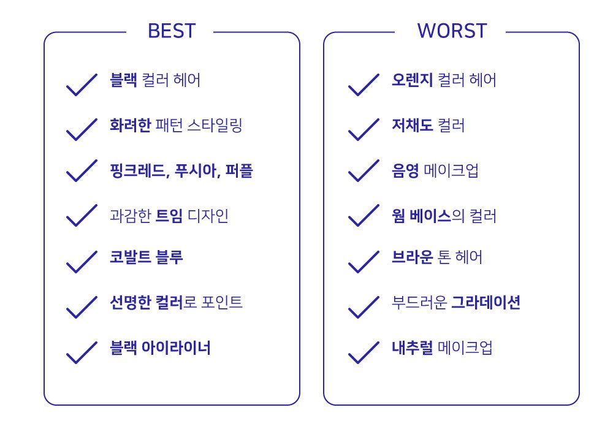
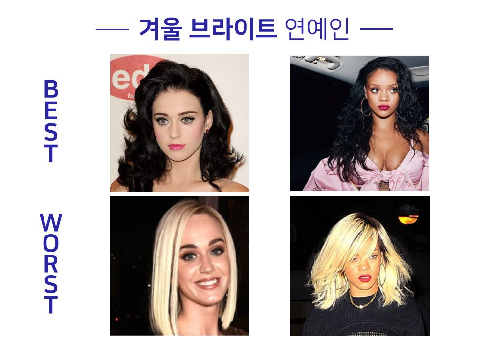
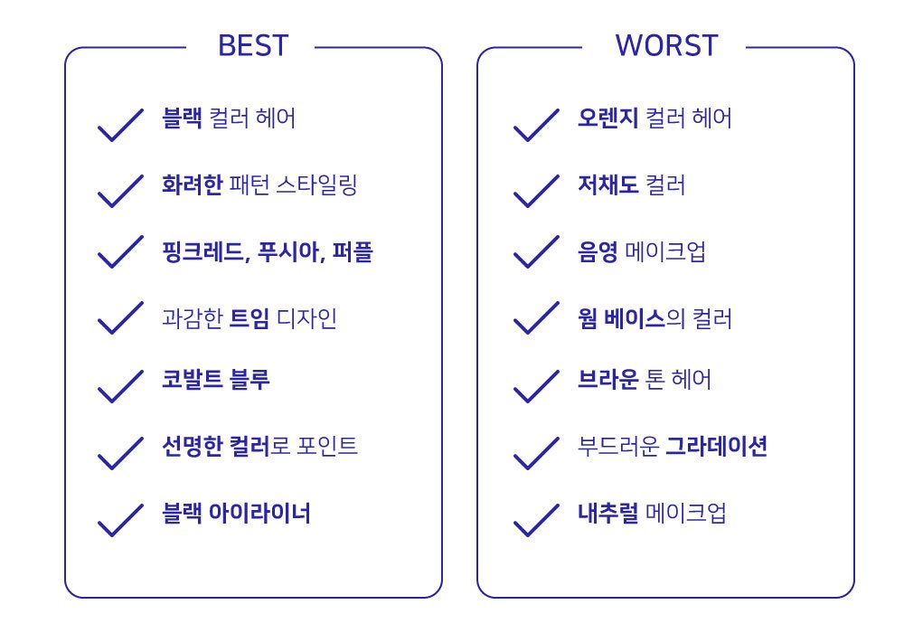
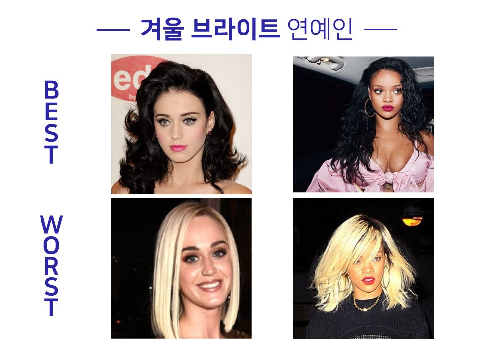

먼저 겨울 브라이트 톤은 트루톤과 비슷한 색상이지만
봄 브라이트와도 근접하고 여름브라이트와
가을딥이 걸치는 경우도 많습니다!
또 간간히 잘어울리는 파스텔톤도 있는 편입니다
겨울 딥에 비하면 무난한 편이죠 ^^
겨울 브라이트는 겨울 쿨톤 중에서 가장 화려한 타입이며
쿨 베이스의 고채도 컬러나 선명한 컬러로
스타일링을 하시는 게 좋습니다!
제가 아까 말씀드렸던 립 컬러 선택으로 얼굴을 밝힐 수 있는 색으로는
화려한 핫핑크, 핏빛 버건디, 핏빛 레드가 있습니다!
쿨톤의 시크한 매력을 살리시기에 안성맞춤이지요^^
겨울 브라이트 특징은 다음과 같습니다.

 


